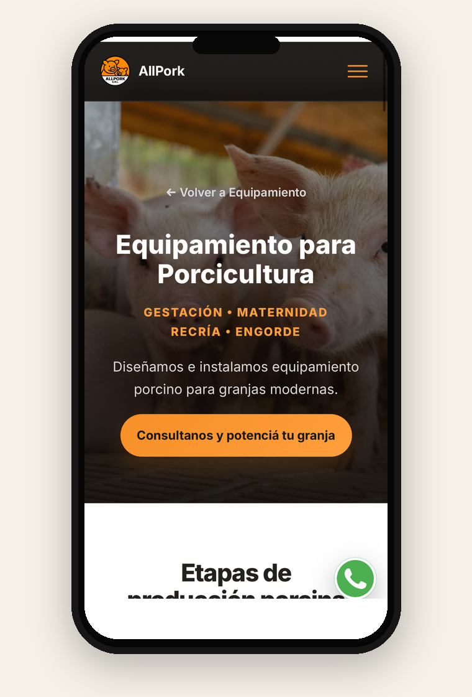

Ideas que se convierten en comunicación con propósito.
Una selección de proyectos donde combino conocimiento del agro, estrategia y creatividad para construir una presencia digital clara, profesional y orientada al negocio.
AllPork: del equipamiento a una propuesta digital clara.
Un caso real de desarrollo web y comunicación digital para una empresa que ofrece equipamiento, montaje y asesoramiento técnico para producciones porcinas y avícolas.
Presentar una oferta técnica de manera accesible y profesional, mostrando no solo los equipos, sino también las soluciones que AllPork brinda a sus clientes.
Diseño y organización del sitio web, jerarquización de los servicios y desarrollo de contenidos digitales orientados a productores y potenciales inversores.
Presentar equipamiento, montaje y asesoramiento técnico como soluciones complementarias; utilizar mensajes claros y facilitar el contacto comercial desde la web.


Una web que explica qué hace AllPork y facilita el contacto.
Diseño y organización de una web para presentar sus servicios, comunicar su propuesta de valor y permitir que un potencial cliente consulte desde computadora o celular.
Conocer la web de AllPork ↗


Dato descriptivo de la evolución del perfil entre dos capturas. No representa una medición de ventas ni atribuye el crecimiento exclusivamente a las acciones de comunicación.
No se trata solo de mostrar productos. Se trata de comunicar el valor de las soluciones.
En AllPork, el trabajo combina conocimiento del sector porcino y avícola, desarrollo web y comunicación estratégica para explicar qué ofrece la empresa y facilitar el acercamiento de potenciales clientes. Es el tipo de enfoque que puedo aplicar a otros negocios del agro.
Agronomía El Trébol: rediseño de una publicación.
Un ejercicio conceptual de jerarquía visual y comunicación comercial agropecuaria.

Una pieza con varios mensajes y elementos compitiendo por la atención.

Mayor protagonismo del producto, jerarquía tipográfica y organización de sus características.
Ejercicio conceptual de portfolio. No es un trabajo contratado ni representa resultados comerciales de Agronomía El Trébol.

Tierra Fly: identidad visual para tecnología agrícola.
Una marca ficticia creada para explorar cómo comunicar innovación y precisión en el agro.

Una identidad que conecta tecnología y producción.
La propuesta combina imágenes de cultivos y drones, una tipografía de alto impacto y una paleta que remite a la innovación y al entorno agrícola.
Mensaje principal
La tecnología que ve lo que tu cultivo necesita.
Enfoque visual
Contraste, claridad y una estética tecnológica vinculada al agro.
Proyecto personal de exploración creativa. Tierra Fly es una marca ficticia, no una empresa cliente ni una campaña comercial real.
¿Trabajamos en tu próximo proyecto?
Contame qué necesita tu empresa y evaluemos una propuesta.
Hablemos por WhatsApp ↗